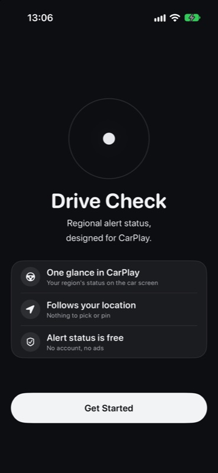
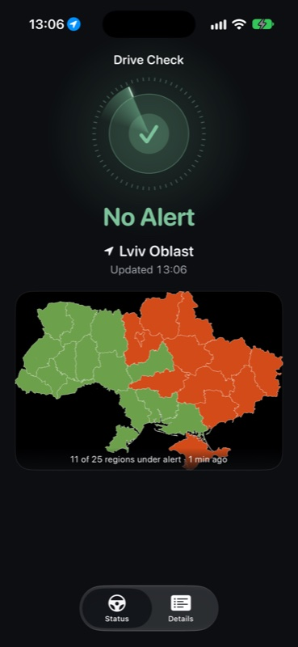
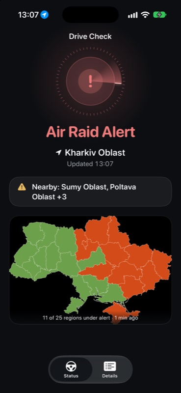

DriveCheckUA
Independent · App Store release
DriveCheckUA shows regional safety alerts on iPhone and CarPlay, with an on-device AI summary. Built with AI agents, from planning to App Store release. Directed the coding agents, reviewed their changes, and verified behavior with deterministic tests and device checks before release. Architected the client, on-device AI integration, and CarPlay UI. Swift code classifies the alert status, and the model writes the summary text from the facts it is given. The AI integration checks model availability, limits generation time, handles cancellation, validates output, and falls back deterministically. Also built home-screen and secondary-region widgets, a Control Center control, App Shortcuts, a Live Activity, and StoreKit 2 subscriptions with purchase verification and unit tests. All targets build in Swift 6 language mode with complete data-race checking. An earlier bounded agent/tool runtime, tested by a 38-case scripted evaluation corpus covering tool selection, execution budgets, malformed results, injection-like inputs, cancellation, and deadlines, was later removed from the app. Released on the App Store.
- Integrated an on-device Foundation Models summary with validation and fallback
- Added widgets, a Live Activity, and StoreKit 2 subscriptions in Swift 6 language mode
SwiftUI · Swift Concurrency · CarPlay · Core Location · MapKit · URLSession · Apple Foundation Models · LLM Integration · Structured Outputs · Tool Calling · Guardrails · Prompt Injection Testing · AI Evaluation · Swift Testing · StoreKit 2 · In-App Subscriptions · AI-Assisted Development · Agentic SDLC · Dependency Injection · Claude Code · Codex · Coding Agents · Context Engineering · Deterministic Verification · Human-in-the-Loop Engineering · WidgetKit · Live Activities · App Intents · Actors · Sendable · Swift 6


